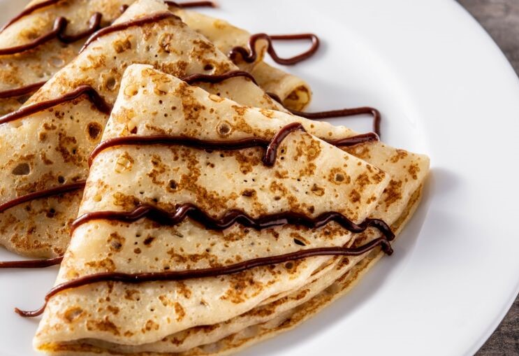

1 pincée de sel
2 verres de farine
3 oeufs
4 verres de lait
2 sachets sucre vanillée
Etape 1 : mettre la farine, le sel, le sucre et les oeufs dans un saladier
Etape 2 : mettre la farine, le sel, le sucre et les oeufs dans un saladier
Etape 3 : ajouter le lait progressivement jusqu'à obtenir une pate homogéne
Etape 4 : dans une poele chaude verser une petite louche de pate puis retourner au bout de 1 minute
